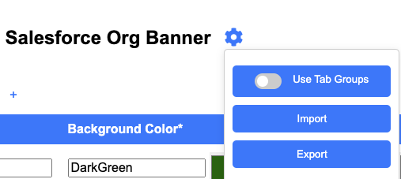

What's New
Version 1.3.1
- Feature: Added support for Google Chrome Tab Groups.
- This feature can be enabled via the options
menu (gear icon) and selecting the "Use Tab Groups" option from the submenu.

Version 1.3
- Feature: Added a popup launcher that shows the tabs and entries, including a search box to easily
find the launch button.
Version 1.2.1
- Fix: Updated background color handling in options due to load issue where background color
was changed from the saved value and resaved.
- Fix: Banner positioning logic to adjust based on vertical placement for login page.
Version 1.2
- Feature: Added functionality to create and manage tabs in the options page.
- Feature: Implemented drag-and-drop functionality for tabs and table entries in the options page.
- Feature: Added the ability to import/export entries to/from JSON.
- Feature: Added the ability to move entries from one tab to another.
- Feature: Added the ability to rearrange tabs.
- Feature: Added the ability to scroll through tabs.
- Fix: Duplicate check is now case insensitive.
Version 1.1
- Fix: Addressed issues reported by users.
- Fix: Fixed banner rendering issues.
Version 1.0
- Initial release with basic features.
Thank you for using our extension!